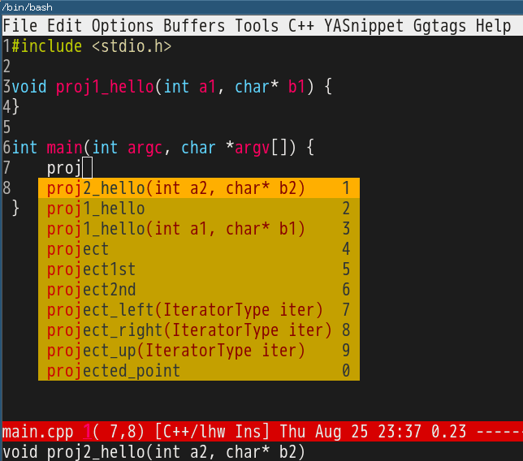

Find the buffer with Chinese name
We can find the buffer with Chinese name efficiently by using the first character of pinyin.
Here is the code (ivy and pinyinlib is required):
(defun ivy-switch-buffer-matcher-pinyin (regexp candidates)
(unless (featurep 'pinyinlib) (require 'pinyinlib))
(let* ((pys (split-string regexp "[ \t]+"))
(regexp (format ".*%s.*"
(mapconcat 'pinyinlib-build-regexp-string pys ".*"))))
(ivy--switch-buffer-matcher regexp candidates)))
(defun ivy-switch-buffer-by-pinyin ()
"Switch to another buffer."
(interactive)
(unless (featurep 'ivy) (require 'ivy))
(let ((this-command 'ivy-switch-buffer))
(ivy-read "Switch to buffer: " 'internal-complete-buffer
:matcher #'ivy-switch-buffer-matcher-pinyin
:preselect (buffer-name (other-buffer (current-buffer)))
:action #'ivy--switch-buffer-action
:keymap ivy-switch-buffer-map
:caller 'ivy-switch-buffer)))
You can M-x ivy-switch-buffer-by-pinyin to switch buffer.
The algorithm of pinyinlib is simple. We build a big lookup table to convert the a plain English string into a regular expression containing Chinese characters.
You can apply the same algorithm to other non-English languages.
Use Perforce inside Emacs
CREATED:
UPDATED:
Perforce is a proprietary VCS. It's less powerful than Git so need extra effort to be use with Emacs.
For example, git log -p file-path displays the detailed history of a single file. There is no way you can do this in perforce. Even ClI like p4 changes file-path | awk '{print $2}' | xargs -i p4 describe -du {} can't do it. I have to use Emacs Lisp to clean the output of p4.
Perforce workflow
-
p4 setto set up -
p4 loginto login -
p4 clientcreates a new work space to tell server the directories/files to check out or to ignore -
p4 sync //depot/url/...to checkout files - Files are read-only by default. You need
p4 edit fileto make files writable before editing -
p4 add filesto add new files.p4 revertto revert edited file to it original status and lose the local changes -
p4 changeto create a pending change. Thenp4 submit -c #changelistto actually submit code to main branch. Pending change gives you a chance to tweak the change before submit - Or
p4 submit -d"description" fileto submit a single file directly
My solution
Perforce Cygwin portable is not recommended.
I suggest using executable from Perforce Windows native version which works on both Cygwin and Windows.
Perforce server assigns unique URL for each physical file. If I only feed p4 that URL, the operation is always successful.
Emacs
I developed vc-msg which shows "commit message of current line in Emacs". It supports Perforce out of box (you still need p4 login at first.)
My patched emacs-git-gutter show Perforce gutters. You only need setup git-gutter:exp-to-create-diff. Here is a sample,
(setq-local git-gutter:exp-to-create-diff
(shell-command-to-string (format "p4 diff -du -db %s"
(file-relative-name buffer-file-name))))
I also provided commands like p4edit, p4revert, p4submit, p4diff, and p4history,
;; {{ perforce utilities
(defvar p4-file-to-url '("" "")
"(car p4-file-to-url) is the original file prefix
(cadr p4-file-to-url) is the url prefix")
(defun p4-current-file-url ()
(replace-regexp-in-string (car p4-file-to-url)
(cadr p4-file-to-url)
buffer-file-name))
(defun p4-generate-cmd (opts)
(format "p4 %s %s" opts (p4-current-file-url)))
(defun p4edit ()
"p4 edit current file."
(interactive)
(shell-command (p4-generate-cmd "edit"))
(read-only-mode -1))
(defun p4submit (&optional file-opened)
"p4 submit current file.
If FILE-OPENED, current file is still opened."
(interactive "P")
(let* ((msg (read-string "Say (ENTER to abort):"))
(open-opts (if file-opened "-f leaveunchanged+reopen -r" ""))
(full-opts (format "submit -d '%s' %s" msg open-opts)))
;; (message "(p4-generate-cmd full-opts)=%s" (p4-generate-cmd full-opts))
(if (string= "" msg)
(message "Abort submit.")
(shell-command (p4-generate-cmd full-opts))
(unless file-opened (read-only-mode 1))
(message (format "%s submitted."
(file-name-nondirectory buffer-file-name))))))
(defun p4revert ()
"p4 revert current file."
(interactive)
(shell-command (p4-generate-cmd "revert"))
(read-only-mode 1))
(defun p4-show-changelist-patch (line)
(let* ((chg (nth 1 (split-string line "[\t ]+")))
(url (p4-current-file-url))
(pattern "^==== //.*====$")
sep
seps
(start 0)
(original (if chg (shell-command-to-string (format "p4 describe -du %s" chg)) ""))
rlt)
(while (setq sep (string-match pattern original start))
(let* ((str (match-string 0 original)))
(setq start (+ sep (length str)))
(add-to-list 'seps (list sep str) t)))
(setq rlt (substring original 0 (car (nth 0 seps))))
(let* ((i 0) found)
(while (and (not found)
(< i (length seps)))
(when (string-match url (cadr (nth i seps)))
(setq rlt (concat rlt (substring original
(car (nth i seps))
(if (= i (- (length seps) 1))
(length original)
(car (nth (+ 1 i) seps))))))
;; out of loop now since current file patch found
(setq found t))
(setq i (+ 1 i))))
;; remove p4 verbose bullshit
(setq rlt (replace-regexp-in-string "^\\(Affected\\|Moved\\) files \.\.\.[\r\n]+\\(\.\.\. .*[\r\n]+\\)+"
""
rlt))
(setq rlt (replace-regexp-in-string "Differences \.\.\.[\r\n]+" "" rlt))
;; one line short description of change list
(setq rlt (replace-regexp-in-string "Change \\([0-9]+\\) by \\([^ @]+\\)@[^ @]+ on \\([^ \r\n]*\\).*[\r\n \t]+\\([^ \t].*\\)" "\\1 by \\2@\\3 \\4" rlt))
rlt))
(defun p4--create-buffer (buf-name content &optional enable-imenu)
(let* (rlt-buf)
(if (get-buffer buf-name)
(kill-buffer buf-name))
(setq rlt-buf (get-buffer-create buf-name))
(save-current-buffer
(switch-to-buffer-other-window rlt-buf)
(set-buffer rlt-buf)
(erase-buffer)
(insert content)
(diff-mode)
(goto-char (point-min))
;; nice imenu output
(if enable-imenu
(setq imenu-create-index-function
(lambda ()
(save-excursion
(imenu--generic-function '((nil "^[0-9]+ by .*" 0)))))))
;; quit easily in evil-mode
(evil-local-set-key 'normal "q" (lambda () (interactive) (quit-window t))))))
(defun p4diff ()
"Show diff of current file like `git diff'."
(interactive)
(let* ((content (shell-command-to-string (p4-generate-cmd "diff -du -db"))))
(p4--create-buffer "*p4diff*" content)))
(defun p4history ()
"Show history of current file like `git log -p'."
(interactive)
(let* ((changes (split-string (shell-command-to-string (p4-generate-cmd "changes")) "\n"))
(content (mapconcat 'p4-show-changelist-patch
changes
"\n\n")))
(p4--create-buffer "*p4log*" content t)))
;; }}
As a bonus tip, if you use find-file-in-project, insert below code into prog-mode-hook to view any perforce change inside Emacs,
(setq-local ffip-diff-backends
'((ivy-read "p4 change to show:"
(split-string (shell-command-to-string "p4 changes //depot/development/DIR/PROJ1/...")
"\n")
:action (lambda (i)
(if (string-match "^ Change \\([0-9]*\\)" i)
(shell-command-to-string (format "p4 describe -du -db %s"
(match-string 1 i))))))
"p4 diff -du -db //depot/development/DIR/PROJ1/..."))
You can also check my emacs.d to get latest code.
Bash Shell
Other operations are finished in Bash Shell,
# {{ Perforce, I hope I will never use it
if [ "$OS_NAME" = "CYGWIN" ]; then
function p4() {
export PWD=`cygpath -wa .`
/cygdrive/c/Program\ Files/Perforce/p4.exe $@
}
fi
# p4 workflow:
#
# # basic setup
# p4 set P4CLIENT=clientname # set your default client
# p4 set P4PORT=SERVER:1666
# p4 set P4USER=username
# p4 client # create/edit client, client views selected files
#
# # checkout code
# p4 sync [-f] //depot/project-name/path/...
# p4 edit file[s]
# ... do some editing ...
#
# # submit code
# either `p4 submit -d"say hi" file` or `p4 change`
#
# I recommend `p4 change` because you can edit files list before submit happens.
# After `p4 change`, `p4 submit -c changelist#` to actually submit change.
#
alias p4clr='p4 diff -sr | p4 -x - revert' # like `git reset HEAD`
alias p4blame='p4 annotate -c -db ' # could add -a see deleted lines
alias p4cr='p4 submit -f leaveunchanged+reopen -r'
alias reviewcl='ccollab addchangelist new'
alias p4pending='p4 changes -s pending' # add ... for current directory
alias p4untrack='find . -type f| p4 -x - fstat >/dev/null'
alias p4v='p4 resolve' # after `p4 sync ...`, maybe resolve
alias p4r='p4 revert' # discard changes
alias p4e='p4 edit'
alias p4s='p4 submit'
alias p4sr='p4 submit -f submitunchanged+reopen' #submit&reopen
alias p4up='p4 sync ...' # synchronize from current directory
alias p4o='p4 opened' # list opened files
alias p4c='p4 changes' # create a new pending change
alias p4chg='p4 change' # create a pending change
alias p4d='p4 diff -du -db'
alias p4ds='p4 diff -du -db | lsdiff' # diff summary, patchutils required
alias p4i='p4 integrate'
alias p4unsh='p4 unshelve -s' # Usage: p4unsh changelist#, like `git stash apply`
alias p4h='p4 changes -m 1 ...' # show the head change
function p4mypending {
local P4USERNAME="`p4 user -o | grep '^User:\s' | sed 's/User:\s\([a-bA-B0-9]*\)/\1/g'`"
p4 changes -s pending -u $P4USERNAME
}
function p4shelved {
local P4USERNAME="`p4 user -o | grep '^User:\s' | sed 's/User:\s\([a-bA-B0-9]*\)/\1/g'`"
p4 changes -s shelved -u $P4USERNAME # add ... for current directory
}
function p4cmp {
if [ -z "$1" ]; then
echo "Usage: p4cmp changelist-number changelist-number"
else
p4 diff2 -dub -q -u ...@$1 ...@$2
fi
}
function p4dl {
# git diff
p4 diff -du -db $@ | vim -c "set syntax=diff" -R -
}
function p4sh(){
# show specific change or the latest change
if [ -z "$1" ]; then
p4 changes | python ~/bin/percol.py | awk '{print $2}' | xargs -i p4 describe -du {} | vim -c "set syntax=diff" -R -
else
p4 describe -du -db $@ | vim -c "set syntax=diff" -R -
fi
}
function p4lp {
#like `git log -p`
p4 changes $@ | awk '{print $2}' | xargs -i p4 describe -du {} | less -F
}
function p4mlp {
#like `git log -p`
p4 changes -u $P4USERNAME $@ | awk '{print $2}' | xargs -i p4 describe -du {} | less -F
}
function p4adddir(){
if [ -z "$1" ]; then
echo "Usage: p4adddir directory"
else
find $1 -type f -print | p4 -x - add
fi
}
# p4's suggestion,http://kb.perforce.com/article/27/creating-release-notes
# @google "assing variable from bash to perl in a bash script"
function p4l(){
# p4 log
if [ -z "$1" ]; then
# show the full log
p4 changes -l ... | less
else
# p4log since-changelist-number
p4 changes -l ...@$1,#head|perl -pe "if(\$_=~/$1/){ last;};"
fi
}
function p4ml(){
# my p4 log
if [ -z "$1" ]; then
# show the full log
p4 changes -l -u $P4USERNAME ... | less
else
# p4log since-changelist-number
p4 changes -l -u $P4USERNAME ...@$1,#head|perl -pe "if(\$_=~/$1/){ last;};"
fi
}
# }}
purify quora.com with vanilla javascript
"Smart" http://quora.com always recommends the stories I hate to see.
So here is my way to toggle the stories display on Chrome and Firefox.
Step 1, create a new bookmark with below link,
javascript:a=Array.from(document.getElementsByClassName("AnswerStoryToggleModal"));a.forEach(function(e){e.style.display=a[a.length-1].style.display==='none'?'block':'none';});
Step 2, DONE! You only need click the bookmark to hide or show the stories when visiting http://quora.com.
Here is the original vanilla javascript,
var a = Array.from(document.getElementsByClassName("AnswerStoryToggleModal"));
a.forEach(function (e) {
// check 'display' of the last item in story feed before toggling
e.style.display = a[a.length - 1].style.display === 'none' ? 'block' : 'none';
});
Screenshot:
山东韭菜猪肉虾仁水饺
原料
- 韭菜一斤(8把)
- 虾仁适量
- 八角一个
- 猪肉适量
- 饺子皮90片
流程
- 韭菜切碎
- 虾仁切成小块
- 猪肉冷冻后切丁
- 葱姜切末
- 八角磨成粉(或十三香或五香粉),可以用捣蒜的工具捣尽量碎
- 以上材料混合,加鲜味酱油,加菜油(馅不干且有香味),加盐适量,可再加适量麻油
- 包饺子时面皮涂点水,对折用两个大拇指用力压扁饺子边
- 饺子底部粘生粉防止粘一起
- 熟后可用蒜末和醋调味
馅:
开吃:
湖南菜攸县香干
用料:
- 豆豉8粒
- 蒜瓣4片
- 生姜一片
- 辣椒4根
- 豆腐干6块
步骤:
- 姜蒜切好,姜切沫,蒜切片
- 蒜苗切斜段,青红椒各切圈
- 香干切片,斜着下刀更好看
- 锅中烧开水,水开后将香干片倒进去煮一分钟捞起控干水分备用
- 锅里放油,立刻放适量豆豉(dou chi)姜蒜辣椒炒香,蒜蓉微红色即可进入下一步
- 倒入香干,加生抽适量,老抽几滴上色,白糖少许提鲜,盐适量,耗油适量,最后放入蒜苗就起锅了
小结:
- 3分钟可以炒完
Emacs as C++ IDE, easy way
CREATED:
UPDATED:
This solution works on Linux/macOS/Cygwin (should work at Windows too, but I don't develop at Windows).
Setup is minimum. Only GNU Global and two Emacs plugins are required:
-
company-gtags.elfrom company for code completion - emacs-helm-gtags or emacs-counsel-gtags (recommended) for code navigation
Here is the step to step guide.
Step 1, create sample projects for experiment
I have two projects ~/proj1 and ~/proj2.
Both projects use files from read only directories /usr/include and /usr/src/linux/include.
We create a new directory ~/obj to store index files created by GNU Global because directories of third party libraries are read only.
Let's create directories,
mkdir -p ~/{proj1,proj2,obj}
The content of ~/proj2/lib.cpp,
void proj2_hello(int a2, char* b2) {
}
The content of ~/proj1/main.cpp,
void proj1_hello(int a1, char* b1) {
}
int main(int argc, char *argv[]) {
return 0;
}
Step 2, scan C++ code and setup Emacs
Run below command in shell to scan code,
# dump index files to directory ~/obj if 3rd party library directory is read only
cd /usr/include && MAKEOBJDIRPREFIX=~/obj gtags --objdir
cd /usr/linux/include && MAKEOBJDIRPREFIX=~/obj gtags --objdir
# # above two command lines are same as below two command lines
# mkdir -p ~/obj/usr/include && cd /usr/include && gtags --objdir=~/obj/usr/include
# mkdir -p ~/obj/usr/linux/include && cd /usr/linux/include && gtags --objdir=~/obj/usr/linux/include
...
# index files are placed inside the projects
cd ~/proj1 && gtags
cd ~/proj2 && gtags
...
Global introduced MAKEOBJDIRPREFIX on 2008-03-23. I tested with GNU Global v6.6.2 on Debian.
After installing Emacs plugins and setup (minimum setup from their website is enough), insert below code into ~/.emacs,
;; `file-truename' MUST be used!
(setenv "GTAGSLIBPATH" (concat "/usr/include"
":"
"/usr/src/linux/include"
":"
(file-truename "~/proj2")
":"
(file-truename "~/proj1")))
(setenv "MAKEOBJDIRPREFIX" (file-truename "~/obj/"))
(setq company-backends '((company-dabbrev-code company-gtags)))
Usage
Use the Emacs plugins as usual.
But you need install latest company built on 25th August because I fixed a company issue yesterday.
Screenshot,

Tip
GNU Global could use ctags (Either Exuberant Ctags or Universal Ctags) as backend to create tags file.
I suggest NOT doing so. Or else I'm not sure the company-mode or emacs-counsel-gtags will work.
If you prefer ctags, you could use it directly. Then you can use company-ctags plus company-mode for auto-completion. Use counsel-etags for navigation.
Technical Details (Optional)
Check GNU Global manual to understand environment variables GTAGSLIBPATH and MAKEOBJDIRPREFIX.
No worries when elpa is down
I use one liner shell command to clone Emacs Lisp Package Archive (ELPA):
mkdir -p ~/elpaclone && cd ~/elpaclone && curl -L https://elpa.gnu.org/packages/archive-contents | perl -pe 's/(^\(1|\n)//g' | perl -pe 's/\]\)/])\n/g' | perl -pe 's/^ *\(([a-z0-9A-Z-]*).*\[\(([0-9 ]*).*(single|tar).*/\1-\2.\3/g' | perl -pe 's/ /./g' | perl -pe 's/single/el/g' | perl -pe 's/\)//g' | xargs -I {} curl -L -O https://elpa.gnu.org/packages/{} && curl -L -O https://elpa.gnu.org/packages/archive-contents
The https://elpa.gnu.org/packages/archive-contents contains all the information of packages. I re-organize it to make sure each line corresponds to one package. Then I use cURL to download everything.
Usage is simple.
Insert below line at the beginning of ~/.emacs when elpa.gnu.org is down:
(setq package-archives '(("elpaclone" . "~/elpaclone")))
This solution also works for MELPA.
Use js2-mode as minor mode to process JSON
Most people use js2-mode as a major mode for javascript. For JSON file, they prefer json-mode.
But if you truly understand the meaning of Software Freedom, you will realize "major-mode" and "minor-mode" are man-made concepts which actually have no difference.
In essence, a major mode is just a collection of APIs. We could use its APIs without enabling it, perfectly complying with "The freedom to run the program as you wish, for any purpose (freedom 0).".
Here are two examples.
Validate JSON
M-x my-validate-json-or-js-expression to validate the buffer.
C-u my-validate-json-or-js-expression to validate selected region.
(defun my-validate-json-or-js-expression (&optional not-json-p)
"Validate buffer or select region as JSON.
If NOT-JSON-P is not nil, validate as Javascript expression instead of JSON."
(interactive "P")
(let* ((json-exp (if (region-active-p) (buffer-substring-no-properties (region-beginning) (region-end))
(buffer-substring-no-properties (point-min) (point-max))))
(jsbuf-offet (if not-json-p 0 (length "var a=")))
errs
first-err
(first-err-pos (if (region-active-p) (region-beginning) 0)))
(unless not-json-p
(setq json-exp (format "var a=%s;" json-exp)))
(with-temp-buffer
(insert json-exp)
(unless (featurep 'js2-mode)
(require 'js2-mode))
(js2-parse)
(setq errs (js2-errors))
(cond
((not errs)
(message "NO error found. Good job!"))
(t
;; yes, first error in buffer is the last element in errs
(setq first-err (car (last errs)))
(setq first-err-pos (+ first-err-pos (- (cadr first-err) jsbuf-offet)))
(message "%d error(s), first at buffer position %d: %s"
(length errs)
first-err-pos
(js2-get-msg (caar first-err))))))
(if first-err (goto-char first-err-pos))))
Print JSON path
For example, you got JSON string {"a": {"b": 3}}. If you place cursor over 3 and M-x my-print-json-path, you got output a.b.
(defun my-print-json-path (&optional hardcoded-array-index)
"Print the path to the JSON value under point, and save it in the kill ring.
If HARDCODED-ARRAY-INDEX provided, array index in JSON path is replaced with it."
(interactive "P")
(cond
((memq major-mode '(js2-mode))
(js2-print-json-path hardcoded-array-index))
(t
(let* ((cur-pos (point))
(str (buffer-substring-no-properties (point-min) (point-max))))
(when (string= "json" (file-name-extension buffer-file-name))
(setq str (format "var a=%s;" str))
(setq cur-pos (+ cur-pos (length "var a="))))
(unless (featurep 'js2-mode)
(require 'js2-mode))
(with-temp-buffer
(insert str)
(js2-init-scanner)
(js2-do-parse)
(goto-char cur-pos)
(js2-print-json-path))))))
Summary
As you can see, I use a few APIs from js2-mode while js2-mode is still disabled:
- js2-errors
- js2-get-msg
- js2-print-json-path
- js2-init-scanner
- js2-do-parse
烟台炖土豆丝
- 切丝浸入冷水中
- 干辣椒蒜头切碎小火至略焦黄 (两三个蒜瓣对应四个土豆)
- 放入土豆丝八角(一到两个,不要更多)炒到变软
- 放入水,几滴醋,盖上小火焖一下,留点水
Enhance emacs-git-gutter with ivy-mode
CREATED:
UPDATED:
emacs-git-gutter shows an icon in the gutter area. The icon indicating whether a line has been inserted, modified or deleted in Emacs.
I usually use M-x git-gutter:previous-hunk or M-x git-gutter:next-hunk to navigate between the hunks.
But if there are too many hunks in one file, ivy-mode is more efficient:
(require 'ivy)
(require 'git-gutter)
(defun my-reshape-git-gutter (gutter)
"Re-shape gutter for `ivy-read'."
(let* ((linenum-start (aref gutter 3))
(linenum-end (aref gutter 4))
(target-line "")
(target-linenum 1)
(tmp-line "")
(max-line-length 0))
(save-excursion
(while (<= linenum-start linenum-end)
(goto-line linenum-start)
(setq tmp-line (replace-regexp-in-string "^[ \t]*" ""
(buffer-substring (line-beginning-position)
(line-end-position))))
(when (> (length tmp-line) max-line-length)
(setq target-linenum linenum-start)
(setq target-line tmp-line)
(setq max-line-length (length tmp-line)))
(setq linenum-start (1+ linenum-start))))
;; build (key . linenum-start)
(cons (format "%s %d: %s"
(if (eq 'deleted (aref gutter 1)) "-" "+")
target-linenum target-line)
target-linenum)))
(defun my-goto-git-gutter ()
(interactive)
(if git-gutter:diffinfos
(ivy-read "git-gutters:"
(mapcar 'my-reshape-git-gutter git-gutter:diffinfos)
:action (lambda (e)
;; ivy9+ keep `(car e)'
;; ivy8- strip the `(car e)'
;; we handle both data structure
(unless (numberp e) (setq e (cdr e)))
(goto-line e)))
(message "NO git-gutters!")))
Screenshot: